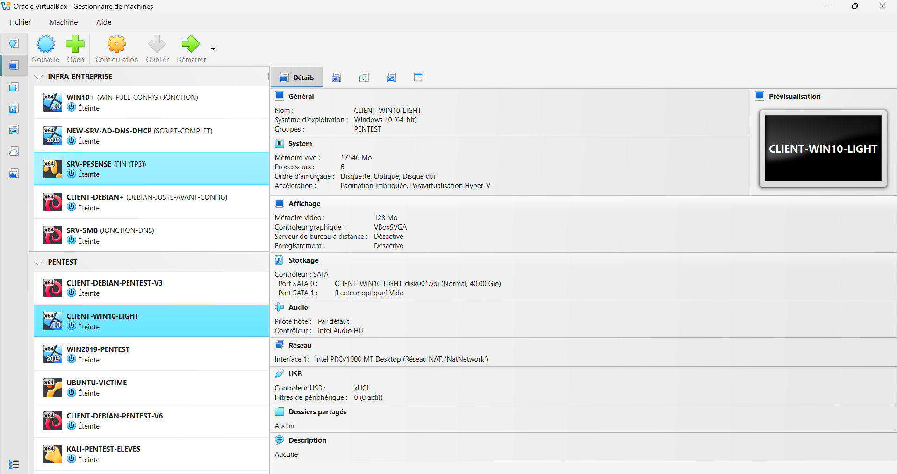
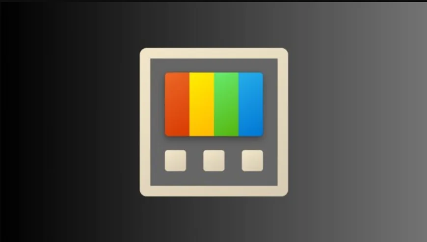
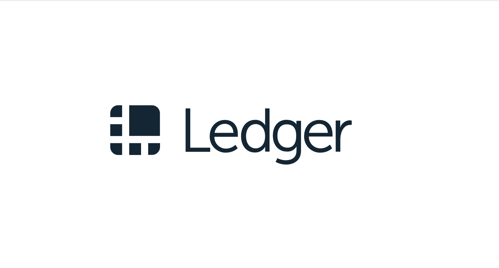

3 sujets : Microsoft PowerToys · Ledger & Hardware Wallets · Cybersécurité des véhicules connectés

PowerToys est un ensemble d'utilitaires gratuits développé par Microsoft pour les utilisateurs avancés de Windows. Le projet, open source et hébergé sur GitHub, propose des outils de productivité qui étendent les fonctionnalités natives du système.
Gestionnaire de fenêtres avec zones personnalisées.
Lanceur rapide - Alt+Espace.
Pipette pour identifier toute couleur.
Identifie les processus verrouillant un fichier.
Remappage de touches et raccourcis.
Redimensionnement par lot.
OCR intégré pour extraire du texte.
Prévisualisation rapide - Ctrl+Espace.
Intérêt SISR : gestion de multiples fenêtres pour le monitoring, extraction de texte depuis des captures, remappage de raccourcis pour SSH, et identification de processus bloquants.
Installation : Microsoft Store, GitHub Releases, ou winget install Microsoft.PowerToys
J'ai découvert PowerToys en cherchant des outils pour optimiser mon environnement de travail lors de mes TPs réseau. Gérer plusieurs fenêtres simultanément (terminal, documentation, Wireshark) devenait vite fastidieux avec les fonctions natives de Windows. J'effectue ma veille principalement via le dépôt GitHub officiel (releases notes), la chaîne YouTube TechSama et IT-Connect, que je consulte régulièrement.
Je l'utilise pour diviser mon écran en zones fixes lors des TPs : terminal SSH à gauche, documentation au centre, monitoring à droite. Gain de temps considérable par rapport au snap Windows natif.
Indispensable quand Windows refuse de supprimer ou déplacer un fichier sans préciser pourquoi. Permet d'identifier en un clic quel processus verrouille le fichier et de le terminer proprement.
Utilisé pour extraire du texte depuis des captures d'écran de logs ou messages d'erreur — évite de retaper manuellement des chemins ou codes d'erreur longs.
Remplacement du menu Démarrer pour lancer rapidement des applications, rechercher des fichiers ou calculer sans quitter le clavier. Alt+Espace devient un réflexe.
Ajout de New+, un gestionnaire de modèles de fichiers permettant de créer rapidement des fichiers préconfigurés depuis l'explorateur Windows.
Amélioration de Workspaces : sauvegarde et restauration de configurations complètes de fenêtres, utile pour retrouver son environnement de travail en un clic.
Introduction de Environment Variables, une interface graphique pour gérer les variables d'environnement Windows sans passer par les paramètres système avancés.
Face à des outils comme AutoHotkey (scripts de remappage très puissants mais complexes à configurer) ou Wox (lanceur alternatif), PowerToys se distingue par son intégration native à Windows, sa maintenance active par Microsoft et sa prise en main immédiate sans scripting. Pour un usage professionnel en environnement d'entreprise, l'absence de dépendances tierces et le support officiel Microsoft sont des atouts décisifs.

Les hardware wallets sont des dispositifs physiques dédiés à la sécurisation des clés privées cryptographiques. Ledger, entreprise française fondée en 2014, est le leader mondial du secteur avec plus de 6 millions d'appareils vendus. Ces dispositifs constituent un cas d'étude concret de sécurité matérielle appliquée à grande échelle, directement comparable aux HSM (Hardware Security Modules) utilisés en entreprise.
Puce certifiée CC EAL5+ isolant les clés privées du système principal.
Système d'exploitation propriétaire Ledger pour l'isolation des applications.
Nombre cryptographique qui ne quitte jamais le Secure Element.
Attaques par analyse de consommation électrique ou rayonnement EM.
Compromission d'une dépendance logicielle en amont de la livraison.
Équivalent entreprise du hardware wallet : protège les clés PKI et CA.
Lien SISR : les concepts de Ledger sont identiques à ceux des HSM d'entreprise : isolation matérielle, attestation de firmware, résistance aux attaques physiques. Un administrateur systèmes gère régulièrement des PKI et des CA qui reposent sur les mêmes principes.
Modèles : Ledger Nano S Plus, Nano X (Bluetooth), Ledger Stax & Flex (écran tactile, 2024)
En m'intéressant aux cryptomonnaies, j'ai rapidement cherché comment sécuriser des actifs numériques de manière fiable. Les wallets logiciels (MetaMask, Exodus) exposent les clés privées en mémoire RAM — un attaquant avec un accès local peut les extraire. En creusant la question, j'ai découvert l'architecture des hardware wallets et leur lien direct avec la sécurité matérielle étudiée en SISR. Je me tiens informé via le blog officiel Ledger, le dépôt GitHub Ledger, les publications de Trail of Bits et les alertes du CERT-FR.
Le Ledger Connect Kit (bibliothèque npm utilisée par des dizaines de dApps) est compromis via un compte npm d'un ancien employé. Du code malveillant redirige les transactions vers un wallet attaquant. Environ 600 000 $ volés en quelques heures avant que le package soit retiré.
La base de données e-commerce Ledger est exfiltrée : 1 million d'adresses email et 272 000 dossiers complets (nom, adresse postale, téléphone) publiés sur des forums. La faille n'était pas dans l'appareil mais dans l'API marketing — illustration que la surface d'attaque dépasse le produit lui-même.
Ledger annonce Ledger Recover : service de sauvegarde de la seed phrase via trois tiers de confiance. Très controversé car il implique de fragmenter et transmettre la seed (chiffrée) vers des serveurs externes. Révèle que le firmware peut techniquement extraire la seed — remettant en cause le modèle de confiance du Secure Element.
Nouveaux modèles avec écran tactile E Ink et confirmation visuelle des transactions directement sur l'écran sécurisé — réduisant le risque d'attaque "blind signing" où l'utilisateur signe sans voir ce qu'il approuve.
Ledger pousse l'adoption du clear signing : affichage lisible des détails de chaque transaction sur l'écran de l'appareil, plutôt qu'un hash hexadécimal incompréhensible. Effort de standardisation avec les principaux protocoles DeFi.
Face aux wallets logiciels (MetaMask, Exodus), le hardware wallet ajoute une couche d'isolation physique irremplaçable. Face aux wallets papier (seed phrase écrite), il offre la facilité d'usage et la résistance aux keyloggers. Son équivalent en entreprise est le HSM (Thales, Utimaco, YubiHSM) qui protège les clés PKI et les autorités de certification. La limite principale reste la confiance accordée au fabricant — comme le montre l'affaire Ledger Recover.
Les véhicules modernes — motos incluses — embarquent des dizaines d'ECU (Electronic Control Units) interconnectés via des protocoles réseau internes. Avec l'ajout du Bluetooth, du WiFi, de la 4G et des accès sans clé, la surface d'attaque devient comparable à un réseau d'entreprise : de multiples points d'entrée, des protocoles anciens sans authentification, et des conséquences physiques en cas de compromission.
Réseau interne reliant tous les calculateurs, sans authentification native.
Electronic Control Unit : calculateurs gérant chaque fonction du véhicule.
Port de diagnostic standardisé — point d'entrée privilégié des attaques physiques.
Amplification du signal de la clé sans contact pour déverrouiller à distance.
Vehicle to Everything : communication entre véhicules et infrastructure routière.
Réglementation européenne cybersécurité obligatoire pour tous les véhicules neufs depuis 2022.
Lien SISR : le CAN bus est un réseau embarqué avec ses propres protocoles, topologies et vulnérabilités — comme un LAN d'entreprise. Les principes de segmentation, détection d'intrusion et durcissement s'appliquent directement. Des IDS spécifiques aux véhicules émergent (Argus Cyber Security, Upstream Security).
Standard de référence : ISO/SAE 21434 — cybersécurité du cycle de vie des véhicules routiers (2021)
Passionné de moto, j'ai commencé à m'interroger sur la sécurité réelle des systèmes connectés présents sur les modèles récents. Les motos modernes (Honda Goldwing, BMW R1250GS, Ducati Multistrada V4) embarquent Bluetooth, GPS, et des systèmes de clé sans contact. En cherchant des informations sur les relay attacks — méthode couramment utilisée pour voler des motos à clé sans contact — j'ai découvert l'étendue des vulnérabilités dans les protocoles embarqués et leur lien direct avec la sécurité réseau étudiée en SISR. Je me tiens informé via les publications de l'ENISA, les conférences Black Hat et DEF CON, et les rapports d'IOActive.
Charlie Miller et Chris Valasek prennent le contrôle total d'une Jeep Cherokee en marche via le système Uconnect (3G), sans accès physique : accélération, freinage, direction, essuie-glaces. Publication à DEF CON. Résultat : rappel de 1,4 million de véhicules par Chrysler-FCA.
Des chercheurs de Keen Security Lab démontrent un accès root au CAN bus à distance sur une Tesla Model S, permettant d'activer les freins en marche. Tesla corrige la faille via une mise à jour OTA (Over The Air) en 10 jours — illustrant l'avantage des mises à jour distantes.
Les relay attacks sur motos à clé sans contact sont devenues une méthode de vol courante en Europe. Deux attaquants amplifient le signal de la clé (dans la maison) vers la moto (dans la rue) pour la déverrouiller et la démarrer sans effraction. Aucun bruit, aucune trace — détection quasi impossible sans cage de Faraday pour la clé.
Entrée en vigueur en Europe de la réglementation UNECE WP.29 imposant aux constructeurs un CSMS (Cybersecurity Management System) pour tous les nouveaux types de véhicules. Premier cadre réglementaire contraignant de l'industrie automobile en matière de cybersécurité.
Émergence d'IDS/IPS embarqués (Intrusion Detection/Prevention Systems) spécifiques aux véhicules. Des entreprises comme Argus Cyber Security (rachetée par Continental) ou Upstream Security analysent le trafic CAN bus en temps réel pour détecter des comportements anormaux.
Développement de dongles OBD-II sécurisés filtrant les commandes injectées via le port de diagnostic. Contremesure aux attaques physiques via OBD, particulièrement visées par les voleurs professionnels sur les véhicules haut de gamme.
Le Ultra Wideband (UWB) remplace progressivement le Bluetooth et le RFID pour les clés sans contact. Sa précision de localisation (±10 cm) permet de vérifier que la clé est physiquement à l'intérieur du véhicule — rendant les relay attacks inefficaces. Déployé sur BMW, Apple CarKey, certains modèles Honda.
Mon environnement d'apprentissage : VMs VirtualBox, services déployés en auto-formation, tests d'architectures réseau et expérimentations système.